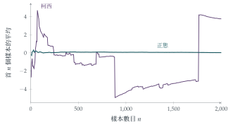

STEP III 1995，第 12 題
繼續之前，請先閱讀題目（原題為英文）。題目載於 STEP Support Programme 的題目資料庫： step.maths.org/questions/95-s3-q12
引子
把許多次量度的結果取平均，隨機誤差便會互相抵消：平均值會穩定下來，趨向真實的數值。這條大數定律（law of large numbers）是整個統計學的基石。但它暗藏一個假設：這些量度必須有有限的平均值（mean）。本題構造了一個再自然不過的隨機變量（random variable），即兩個獨立（independent）標準正態（standard normal）變量之比，而它根本沒有平均值。它的平均永遠不會穩定下來；事實上，一百萬個這樣的變量的平均，其分佈與單獨一個的分佈完全相同。
這就是柯西分佈（Cauchy distribution）。它的密度（density）看來像一個人畜無害的鐘形，但它的尾部實在太厚，偶然出現的極大數值足以左右任何平均。本題用一個漂亮的幾何論證把它找出來：兩個坐標之比就是一條直線的斜率，而徑向對稱令這條直線的角度呈均勻分佈。
動筆之前
若 \((U, V)\) 是一個隨機點，其密度只取決於它與原點的距離，那麼由原點到該點的直線與坐標軸所成的角 \(\Theta\)，你能說些甚麼？
把平面旋轉並不會改變密度，所以每個方向的可能性都相同：角 \(\Theta\) 在 \([0, 2\pi)\) 上呈均勻（uniform）分佈。而 \(\frac UV\) 只取決於方向，與距離無關。
逐步解題
階段 1 聯合密度（joint density）
由於 \(X\) 與 \(Y\) 獨立，它們的聯合密度就是各自密度的乘積： \[\mathrm{f}(x, y) = \frac{1}{\sqrt{2\pi}}e^{-x^2/2}\cdot\frac{1}{\sqrt{2\pi}}e^{-y^2/2} = \frac{1}{2\pi}e^{-\frac12(x^2 + y^2)}.\] 它只透過 \(x^2 + y^2\)（即與原點距離的平方）取決於 \(x\) 和 \(y\)：在以原點為圓心的圓上，密度是常數。這就是「徑向對稱」（radially symmetrical）的意思。
階段 2 運用對稱性
\(\frac UV < k\) 可以在兩種情況下發生，視乎 \(V\) 的正負號而定。這兩種情況與旋轉 \(180^\circ\) 的變換 \((u, v) \mapsto (-u, -v)\) 有甚麼關係？
\(\frac UV < k\) 的意思是：要麼 \(V > 0\) 且 \(U < kV\)，要麼 \(V < 0\) 且 \(U > kV\)。旋轉 \((u, v) \mapsto (-u, -v)\) 把第一個區域映射到第二個區域上，並且保持密度不變。所以兩者的概率相同，於是 \[\mathrm{P}\Bigl(\frac UV < k\Bigr) = 2\mathrm{P}(U < kV, V > 0). \qed\]
階段 3 一個角
在以 \(u\) 為橫軸、\(v\) 為縱軸的平面上，畫出區域 \(\{V > 0, U < kV\}\)。它是一個頂點在原點的楔形。它的角度是多少？
區域 \(V > 0\) 是上半平面。通過原點的直線 \(u = kv\) 與正 \(v\) 軸所成的角為 \(\arctan k\)（當 \(k > 0\) 時偏向正 \(u\) 的一方）。上半平面中位於這條直線左方的部分，是一個角度為 \(\frac\pi2 + \arctan k\) 的楔形。根據徑向對稱，楔形的概率等於它的角度除以 \(2\pi\)，所以 \[\mathrm{P}\Bigl(\frac UV < k\Bigr) = 2\cdot\frac{\frac\pi2 + \arctan k}{2\pi} = \frac12 + \frac1\pi\arctan k.\] 對 \(k\) 求導，便得到密度 \[\mathrm{g}(k) = \frac{1}{\pi(1 + k^2)}. \qed\]
回顧
獨立的正態變量具有徑向對稱性。兩個正態密度的乘積只取決於距離。
比值即方向。\(\frac UV\) 只取決於該點的角度，而這個角度呈均勻分佈。
楔形的概率。在徑向對稱之下，楔形的概率與它的角度成正比。
背後的數學
沒有平均值
柯西分佈的平均值本應是 \(\int_{-\infty}^\infty\frac{k}{\pi(1 + k^2)}\,\mathrm{d}k\)，但 \(\int_0^K\frac{k}{1 + k^2}\,\mathrm{d}k = \frac12\ln(1 + K^2) \to \infty\)：這個積分並不收斂（converge），所以平均值不存在。（對稱性或會令人以為答案是 \(0\)，但正負兩部分都是無窮大，而 \(\infty - \infty\) 並沒有值。）方差（variance）同樣是無窮大。
更糟的是，\(n\) 個獨立柯西變量的平均仍然是柯西變量，而且分佈完全相同。（其中一個看出這點的方法，是利用特徵函數（characteristic function）\(\mathrm{E}(e^{itX}) = e^{-|t|}\)。）所以取平均完全無補於事：一百萬次量度的平均，並不比單獨一次可靠。圖 12.22.1 顯示了實際情況：正態樣本的累計平均會穩定下來，而柯西樣本的累計平均卻永遠東歪西倒，不時被偶然出現的極大數值撞得偏離原位。

柯西變量從何而來
拿一支電筒，朝一個均勻隨機的方向照向一面牆：光點在牆上的位置便服從柯西分佈。在物理學中，同一個密度稱為勞侖茲分佈（Lorentzian），用來描述譜線和共振峯的形狀（比較 第 11.1 節）。在金融學中，像柯西分佈這類厚尾（heavy-tailed）分佈，會用來為偶爾出現的股災建立模型，而正態模型往往嚴重低估這類事件。這對統計學是一個嚴肅的教訓：建基於平均值和方差的方法，遇上厚尾數據便會失效，這時就需要穩健的方法，例如使用中位數（median）（柯西分佈的中位數完全沒有問題）。
這個分佈在 1824 年由泊松（Siméon Denis Poisson）研究過，他注意到它違反大數定律。柯西（Augustin-Louis Cauchy）則在 1853 年與 Irénée-Jules Bienaymé 就最小二乘法（method of least squares）公開論戰時遇上它：柯西用它來說明，當誤差屬於厚尾時，最小二乘法可以是一個很差的方法。這個分佈最終冠上了柯西的名字，正是 Stephen Stigler 所稱的「史蒂格勒命名定律」（Stigler’s law of eponymy）的一例：沒有任何科學發現是以其最初發現者命名的。
思維技巧
使用平均值或方差之前，先確定定義它的積分是收斂的。對稱性並不能令一個發散的積分變成零。
在大學裏，可積性條件是概率論中每一條定理的一部分：大數定律需要有限的平均值，中心極限定理（central limit theorem）（第 12.24 節）需要有限的方差。當這些條件不成立時，柯西分佈就是標準的反例。
延伸練習
電筒。一支電筒與一面長而直的牆相距 \(1\)，所指的方向與垂直線成角 \(\Theta\)，其中 \(\Theta\) 在 \((-\frac\pi2, \frac\pi2)\) 上呈均勻分佈。證明光點的位置 \(\tan\Theta\) 服從柯西分佈。
倒數。證明若 \(C\) 服從柯西分佈，則 \(\frac1C\) 亦然。（提示：\(\frac UV\) 與 \(\frac VU\)。）
中位數行得通。證明柯西分佈的中位數是 \(0\)，而它的四分位數（quartiles）是 \(\pm1\)。
半徑與角度。設 \(X\)、\(Y\) 為獨立的標準正態變量，透過轉換成極坐標（polar coordinates），證明 \(R^2 = X^2 + Y^2\) 服從平均值為 \(2\) 的指數分佈（exponential distribution），並且與角度獨立。（這是用來產生正態隨機數的 Box–Muller 方法的基礎。）
延伸閱讀
Geoffrey Grimmett & Dominic Welsh, Probability: An Introduction（Oxford University Press），論隨機變量的變換。
Nassim Nicholas Taleb, The Black Swan（Penguin）。講述厚尾現象及其重要性，適合一般讀者。
Stephen Stigler, The History of Statistics（Harvard University Press）。書中記述了柯西與 Bienaymé 的論戰。